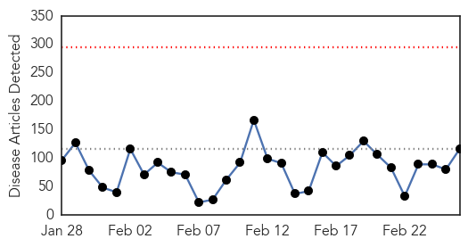
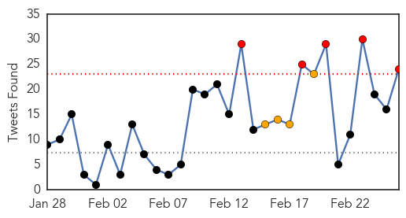
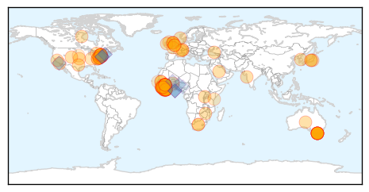
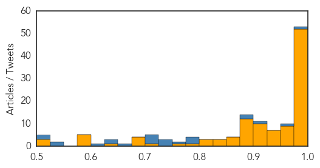

Toggle navigation
Early Warning
Daily Alerts
Ebola
Feb 26, 2015
Compare to:
-
Dengue Fever
Hemmorhagic Fever
Mold/Fungal Infection
Influenza
Meningitis
Pertussis / Whooping Cough
Middle East Respiratory Syndrome
Cholera
Hepatitis
Chikungunya
Yellow Fever
Bubonic Plague
West Nile Virus
Swine Flu
Measles
Unknown
Mumps
30 Day Trends
Web: 0
alerts
, 0
warnings
Twitter: 14
alerts
, 4
warnings
Top Articles:
Showing top 50 articles...
1.000
Children tested for Ebola at Melbourne hospital
1.000
Two children being tested for Ebola virus at Royal Children's Hospital Melbourne are clear
1.000
Two children being tested for Ebola virus at Royal Children's Hospital Melbourne are clear
1.000
Two children being tested for Ebola virus at Royal Children's Hospital Melbourne are clear
1.000
Ebola In Arlington County? Patient Rushed To Virginia Hospital With Virus-Like Symptoms, Infection ‘Unlikely’
1.000
Girls cleared of Ebola in Melbourne Royal Children's Hospital
1.000
Corgenix Receives FDA Authorization and WHO Listing for Emergency Use of Ebola Rapid Diagnostic Test
1.000
The “Africanization” of Ebola
1.000
Ebola virus death toll exceeds 9,500: WHO
0.999
Ebola drug in Guinea helps some, stirs debate on broader use
0.999
Two children hospitalized in Melbourne with suspected Ebola virus
0.998
Sierra Leone reports sharp spike in Ebola cases
0.998
Fatality Rate Is Falling in West African Ebola Clinics
0.997
New York doctor who survived Ebola speaks out
0.996
Ebola test developed by Tulane researchers wins 'game-changing' FDA approval
0.996
Children tested for Ebola at Royal Children’s Hospital
0.996
Melbourne sisters with respiratory infection test negative to Ebola
0.996
Politico SL News The Ebola vaccine debate in Sierra Leone
0.995
Sierra Leone reports sharp spike in Ebola cases
0.994
Traces of Ebola remain in survivors
0.994
U.S. Ebola Survivor Dr. Craig Spencer Gives His Side of the Story
0.994
US wraps up Ebola military mission in Liberia
0.993
Three day wait for Ebola test children
0.993
Liberia leader thanks US as Ebola mission ends
0.993
TJU, Institute Pasteur, and Thermo Fisher Scientific establish training programme – The Financial Express
0.993
Base quarantines, other outbreak decisions on science
0.993
Media, politicians fueled the public's fear
0.993
New WHO Regional Director Commends Sierra Leone in the Fight against Ebola
0.992
Children tested for Ebola at Melbourne hospital
0.992
Ebola doctor: Media, politicians fueled the public's fear
0.992
Quarantines Should Be Based on Science
0.992
AU welcomes back first group of health workers deployed to fight Ebola
0.992
Arlington Resident Checked for Ebola Thursday...
0.991
Two young children being tested for Ebola in Melbourne
0.991
I was never a risk: Doctor who carried Ebola virus from Guinea to New York City says media and politicians need to stop pandering to panic
0.991
Sierra Leone reports sharp spike in Ebola cases
0.990
Injured Westcountry medic flown back to UK after treating Ebola victims
0.990
The most from the coast
0.990
BAN concerned about gloomy economy « Awoko Newspaper
0.989
Obama commission: Don't quarantine Ebola workers
0.989
Ebola: Let's Remember the People at the Heart of the Outbreak
0.988
Two children being tested for Ebola in Melbourne
0.987
Medic put on Ebola watch from Westcountry-led mission in Sierra Leone
0.987
New York Doctor Who Survived Ebola Says Media, Politicians Fueled The Public's Fear
0.984
Ebola doctor Craig Spencer says media's disease hype was deadly
0.984
The official website of the Republic of Korea
0.984
Norwegian Health Minister Assures Sierra Leone
0.983
Little girls cleared of deadly Ebola virus
0.982
Press Release Distribution
0.981
99 Ebola cases in past week, nearly two-thirds in Sierra Leone: WHO
Top Tweets:
0.993
New confirmed Ebola cases (15-22 February): Guinea: 35 Sierra Leone: 63 Liberia: 1 Figures from the World Health Organization (WHO)
0.954
ElbowOutEbola News: Ebola US quarantine for Ebola health workers 'morally wrong' -... http://t.co/q8IXy3MuXb
0.953
BREAKING: Ebola Response in Clarendon - ARL now http://t.co/5fI90N4f13 ebola EVD
0.928
Ebola Update: 23,694 confirmed, probable & suspected cases in 3 most affected countries, with 9,589 deaths. EbolaResponse
0.926
Fatality Rate in West Africa Ebola Clinics Is Dropping - New York Times http://t.co/qQpch0ZcqZ ebola EVD
0.926
Fatality Rate in West Africa Ebola Clinics Is Dropping - New York Times http://t.co/ezoSgwu4Su ebola EVD
0.925
US quarantine for Ebola health workers 'morally wrong' - The Guardian http://t.co/i4U445FWki ebola EVD
0.925
US quarantine for Ebola health workers 'morally wrong' - The Guardian http://t.co/hb39hztPXQ ebola EVD
0.911
FDA approves Corgenix's Ebola test for emergency use - Reuters http://t.co/PiCsaEim79 ebola EVD
0.909
Children tested for Ebola at Melbourne hospital - Yahoo!7 News http://t.co/3V3ZbokoG8 ebola EVD
0.908
Emergency responders investigate possible Virginia Ebola case - Yahoo News http://t.co/QdrViuZoAv ebola EVD
0.905
Ebola endemic in west Africa remains a risk, scientists warn - The Guardian http://t.co/hP9esFWz1Q ebola EVD
0.902
Ebola Update: 23,539 confirmed, probable and suspected cases in 3 most affected countries, with 9,541 deaths. EbolaResponse
0.893
Ebola: Two children being tested for virus at Royal Children's Hospital in ... - ABC Online http://t.co/tuHOEe2bQO ebola EVD
0.881
RT: Ministry of Health in Liberia tells: Last 7 days no new cases of Ebola in the country. Great news, but a backlash is but 1…
0.880
RT: Read the latest update on the Ebola epidemic in West Africa. Ebola http://t.co/qxZV7SJkIL http://t.co/cfrWFFPXqL
0.877
What should happen to Liberia's Ebola Treatment Units as Ebola cases continued to decrease? @EbolaAlert AfricaAgainstEbola
0.856
Results from encouraging Ebola trial scrutinized - Science AAAS http://t.co/oPm5Va4hyN ebola EVD
0.850
Two children being tested for Ebola virus at Royal Children's Hospital Melbourne - Sydney Morning Herald http://t.co/i679KvIdRd ebola EVD
0.850
Liberia leader thanks US as Ebola mission ends - Yahoo News http://t.co/xvLQAfV1jb ebola EVD
0.836
Children tested for Ebola at Royal Children's Hospital - Herald Sun http://t.co/vzkmz8xVC1 ebola EVD
0.792
RT: Liberia has reported 10 Ebola cases in past 10 days. Great news. But hard to see how the vaccine trials can succeed. h…
0.722
Liberia has reported 10 Ebola cases in past 10 days. Great news. But hard to see how the vaccine trials can succeed. http://t.co/QlbFQKJOvG
0.712
We seem to think Ebola is over. But Guinea & Sierra Leone are still recording as many cases a week as many previous outbreaks had all told.
0.681
ebola Update. 23,539 in the 3 most affected countries with 9,541 deaths. 99 new cases: GN 35, SL 63, LB 1 http://t.co/eHFLm8zpM1
0.650
This drug blocks Ebola infection in mice, but it's banned everywhere except China - The Verge http://t.co/tIaaKm2kmA ebola EVD
0.650
RITE teams rapidly identify and isolate those suspected of having Ebola & their contacts. Read more http://t.co/Qq9zABRQyU
0.631
Power of partnership: Teamed w/ @gatesfoundation on new rapid Ebola test set to make a big impact on Ebola fight http://t.co/RiIfO2bjFD
0.618
Doctor Who Survived Ebola Says He Was Unfairly Cast as a Hazard and a Hero - New York Times http://t.co/wybMeGNujP ebola EVD
0.618
Doctor Who Survived Ebola Says He Was Unfairly Cast as a Hazard and a Hero - New York Times http://t.co/1pHhWUwouu ebola EVD
0.602
RT: RITE teams rapidly identify and isolate those suspected of having Ebola & their contacts. Read more http://t.co/Qq9zABRQ…
0.602
RT: RITE teams rapidly identify and isolate those suspected of having Ebola & their contacts. Read more http://t.co/Qq9zABRQ…
0.506
Watch:@YvonneChakaX2 encouraging Africans to help Africa so we can kick ebola out of Africa AfricaAgainstEbola http://t.co/UeBVVnzxFT
Web/News Articles

Tweets

Article Locations

Article Confidences
